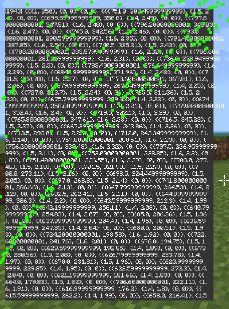

I didn't like scripting's method of debugging, which consisted of putting things in Minecraft chat, so I made my own thing.
It also supports tables, which the old way doesn't, which is cool.
This library also comes with a UI module, which you can see here (If not already, you may need to open this page in it's own tab using the "Open in new tab" button to click on that link)
Here's an utterly chaotic image of it logging a huge table of particle information.